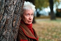

Sara Adéla Lidman
Fil kand, Uppsala 1949, Författare, Aktivist, Fil. hed.dr, Umeå univ. 1978, prof. namn. Blev 80 år.
| Född: | 1923-12-30 Missenträsk, Jörns fs, Jörns sn. [1] | |
|---|
| Döpt: | 1924-01-11 Missenträsk, Jörns fs, Jörns sn. [1] | Dopförrättare: Komminister Gust. Park i Glommersträsk. |
|---|
| Levde: | 1926 Missenträsk, Jörns fs, Jörns sn. [2] | |
|---|
| Levde: | 1934 Missenträsk, Jörns fs, Jörns sn. [2] | |
|---|
| Frånskild kvinna: | 1954-07-20. [3] | |
|---|
| Levde Författare: | 1971 Jungmansgr 2 4 tr, Hägersten fs, Stockholms stad. [4] | |
|---|
| Levde: | 1981 Missenträsk 3:19, Missenträsk, Jörns fs, Skellefteå kn. [5] | |
|---|
| Levde: | 1991 Missenträsk 3:19, Missenträsk, Jörns fs, Skellefteå kn. [3] | |
|---|
| Död: | 2004-06-17 Helena Elisabeths Väg 2, Umeå sfs, Umeå kn. [6] | Sara Lidman död
Författaren Sara Lidman avled på torsdagen efter en tids sjukdom. Sara Lidman blev 80 år gammal.
Sara Lidman lånade i sina första romaner motiv från sin hemby Missenträsk i Västerbotten. I romaner som "Tjärdalen", "Hjortronlandet", "Regnspiran" och "Bära mistel" är språket nydanande med dialektala inslag.
I romanerna behandlade hon moraliska konflikter bland människor i den norrländska glesbygden.
Sara Lidman blev på 1960-talet känd för sitt politiska engagemang, som väcktes under hennes resor i Afrika och Asien, och hon blev en samhällskritiker med ett starkt radikalt patos.
Hon engagerade sig för FNL-rörelsen i Vietnam, och hon var på 1960-talet , och även senare på 1970-talet, en av förgrundsgestalterna i de tidiga protestdemonstrationerna i Stockholm mot USA:s krig i Vietnam.
I romanerna "Jag och min son", om Sydafrika och "Med fem diamanter", om Kenya engagerade hon sig för de svarta i Afrika.
I reportageboken "Samtal i Hanoi" engagerade hon sig för FNL-rörelsen i Vietnam. Intervjuboken "Gruva" (1968) skildrar läget vid LKAB strax före gruvarbetarstrejkens utbrott 1969.
Med den boken, som väckte stor debatt, och som fick stor betydelse för strejken i malmfälten, blev hon ett slags symbolgestalt för 1968-rörelsen. Till detta bidrog också böcker som "Samtal i Hanoi" och "Vänner och u-vänner".
Sara Lidman återvände senare till sin hembygd i romansviten "Din tjänare hör" (1977), "Vredens barn" (1979), "Nabots sten" (1981), "Den underbare mannen" (1983) och "Järnkronan" (1985), en bred krönika om nöden och slitet i Norrlands inland på en starkt rytmisk och personligt utformad prosa.
Tillsammans med "Lifsens rot" (1996) bildar det provinsiella och det universella en kraftfull syntes, som hon gestaltar med sin speciella mångfasetterade konstprosa.
Sara Lidman var 1955-63 ledamot i Samfundet De Nio, hon blev hedersdoktor vid Umeå universitet 1978 och fick professors namn 1999. Hon har fått ett stort antal litterära priser och utmärkelser, däribland Pilotpriset 1999.
Gunnar Sörbring
Publicerad 2004-06-17
www.dn.se/kultur-noje/sara-lidman-dod
|
|---|
Noteringar
Sara Lidman, född 30 december 1923 i Missenträsk, Jörns församling, Västerbotten, död 17 juni 2004 i Umeå, var en svensk författare.
Sara Lidman har sedan 1953 skrivit nitton romaner, som genomgående präglas av teman och historier om solidaritet och sociala motsättningar. Berättelserna utspelas ofta i Västerbotten under senare delen av 1800-talet och det tidiga 1900-talet, då stora förändringar påverkar de små samhällena. Med "Jernbanesviten", en romansvit som skildrar moderniseringen av norra Sverige, har Lidman kommit att betraktas som en av Sveriges främsta samtida författare. "Jernbanesviten" omfattar fem romaner, Din tjänare hör, Vredens barn, Nabots sten, Den underbare mannen och Järnkronan (som fristående fortsättningar till berättelserna i romansviten kan romanerna Lifsens rot och Oskuldens minut ses).
Lidman var hela sitt liv en flitig agitator och debattör och var en framträdande person inom den svenska 68-vänstern. Genom böcker och brandtal lät hon sin röst bli hörd, från Vietnamkriget till protesterna mot Irakkriget. Hon reste till Sydafrika 1960 för att "möta nya människor och problem". Hon blev dock åtalad för brott mot raslagarna och tvingades lämna landet 1961.
Sara Lidman var 1955-1963 ledamot av Samfundet De Nio på stol nr 8.
Fil kand i Uppsala 1949.
Filosofie hedersdoktor vid Umeå universitet 1978.
Tilldelades professors namn 1999.
Bibliografi
Publicerade böcker på Albert Bonniers förlag:
Tjärdalen (1953), roman
Hjortronlandet (1955), roman
Regnspiran (1958), roman
Bära mistel (1960), roman
Jag och min son (1961), roman
Jag och min son (1963), roman, bearbetad version
Med fem diamanter (1964), roman
Samtal i Hanoi (1966), reportage
Gruva. Bild Odd Uhrbom (1968), intervjubok
Gruva. Bild Odd Uhrbom (1969), utvidgad version
Vänner och u-vänner (1969), artikelurval
Marta Marta (1970), pjäs
Din tjänare hör (1977), roman
Vredens barn (1979), roman
Varje löv är ett öga (1980), artikelurval
Nabots sten (1981), roman
Den underbare mannen (1983), roman
Järnkronan (1985), roman
...och trädet svarade (1988), artikelurval
Lifsens rot (1996), roman
Oskuldens minut (1999), roman
Kropp och skäl (2003), diverse artiklar
Publicerat i samarbete med DFFG-Ordfronts förlag:
Fåglarna i Nam Dinh (1972), artiklar om Vietnam
Priser och utmärkelser
Svenska Dagbladets litteraturpris 1953
BMF-plaketten 1956
Tidningen VI:s litteraturpris 1964
Litteraturfrämjandets stora pris 1968
Samfundet De Nios Stora Pris 1977
Nordiska rådets litteraturpris 1980 (för Vredens barn)
Stiftelsen Selma Lagerlöfs litteraturpris 1985
Litteraturfrämjandets stora romanpris 1986
Hedenvind-plaketten 1987
Aniara-priset 1991
Ivar Lo-priset 1992
Harry Martinson-priset 1993
Gerard Bonniers pris 1993
Moa-priset 1996
Stig Sjödinpriset 1998
Sixten Heymans pris 1998
Pilotpriset 1999
Professors namn 1999
Svenska talarpriset 1999
Ivar Lo-Johanssons personliga pris 2001
Personhistoria
| Årtal | Ålder | Händelse |
|---|
| 1923 |
|
Födelse 1923-12-30 Missenträsk, Jörns fs, Jörns sn [1] |
| 1924 |
12 dagar |
Dop 1924-01-11 Missenträsk, Jörns fs, Jörns sn [1] |
| 1925 |
1 år |
Systern Anna Viktoria Lidman föds 1925-09-01 Missenträsk, Jörns fs, Jörns sn [2] |
| 1926 |
|
Levde 1926 Missenträsk, Jörns fs, Jörns sn [2] |
| 1934 |
|
Levde 1934 Missenträsk, Jörns fs, Jörns sn [2] |
| 1954 |
30 år |
Frånskild kvinna 1954-07-20 [3] |
| 1971 |
|
Levde Författare 1971 Jungmansgr 2 4 tr, Hägersten fs, Stockholms stad [4] |
| 1976 |
52 år |
Modern Jenny Elisabet Lundman dör 1976-02-26 Missenträsk, Jörns fs, Skellefteå kn [7] |
| 1976 |
52 år |
Fadern Andreas Lidman dör 1976-10-08 Missenträsk, Jörns fs, Skellefteå kn [7] |
| 1981 |
|
Levde 1981 Missenträsk 3:19, Missenträsk, Jörns fs, Skellefteå kn [5] |
| 1991 |
|
Levde 1991 Missenträsk 3:19, Missenträsk, Jörns fs, Skellefteå kn [3] |
| 2004 |
80 år |
Död 2004-06-17 Helena Elisabeths Väg 2, Umeå sfs, Umeå kn [6] |
Dokument
Källor
| [1] | Jörn C:6 (1923-1925) 194/1923 s.191 k.5/7 |
| |
| | |
| [2] | Jörn AIIA:9 (1926-1934) fol. 902 |
| |
| | |
| [3] | Mantalslängd 1991, Västerbottens län |
| |
| | |
| [4] | Mtl Stockholms stad och län 1971 |
| |
| | |
| [5] | Mtl Västerbottens län 1981 |
| |
| | |
| [6] | man91 / RFV 06 |
| |
| | |
| [7] | Mtl 71 / RTB 76 |
| |
|
|  |
före 2004. Sara Lidman, Författare, Professor, HederDr
Foto: Ola Torkelsson
|
|
{kind=link}